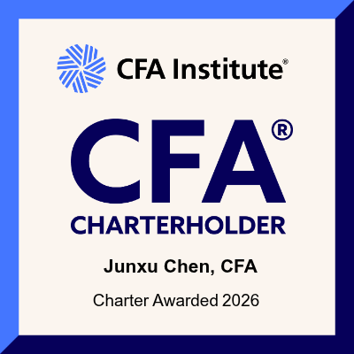
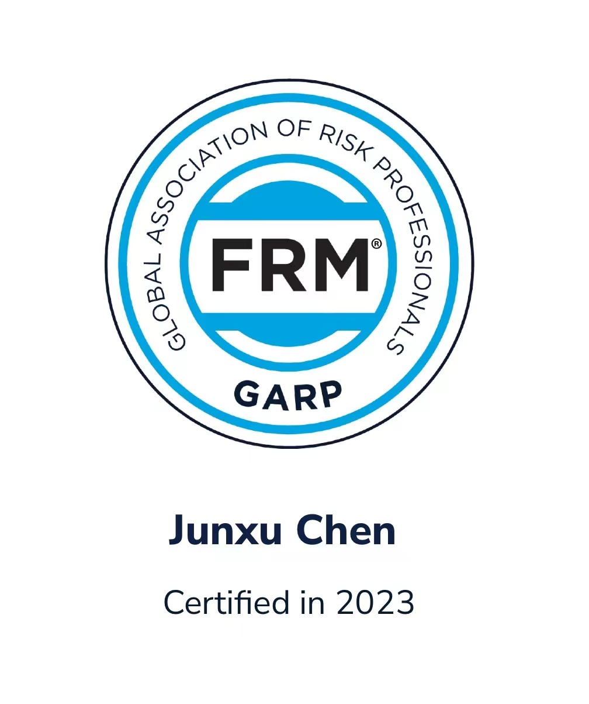

RISK · VALUATION · AI ENGINEERING
陈俊旭 Chen Junxu
01
简介 Profile
5 年大型金融机构服务经验，横跨风险管理、监管合规、估值建模、资金管理系统实施与 机器学习 / AI 解决方案。精通 Murex、市场与信用风险计量，以及债券、股票、衍生品的定价逻辑与估值模型验证。
擅长把复杂技术方案翻译成客户语言与业务价值：解决方案设计、系统实施、客户演示与售前支持是日常主场。 同时是重度 AI 工程实践者——精通 Claude Code、Codex 等工具，熟练编写 Skills， 用 RAG、CoT、Prompt Engineering 把复杂业务逻辑沉淀为标准化、可复用的工作流。
当前方向：解决方案 / 咨询顾问 / 产品经理，银行、科技金融与人工智能领域。
02
经历 Experience
-
2026.02 —
至今上海金仕达软件科技 高级需求分析师
- 拆解线性与非线性复杂衍生品的损益归因逻辑，针对 Vanilla Option、Asian Option、Double Barrier、Staircase 等产品开展敏感性分析，厘清计量口径与金融含义。
- 用 Claude Code / Codex 构建 Analyst、Coder、Reviewer 三角色 Multi-Agent 团队，把分析逻辑沉淀为标准化工作流，整体分析效率较人工提升数十倍。
-
2025.01 —
2026.02长亮科技 高级需求分析师 · 带队 12 人
- 主导平安银行、兴业银行等股份制银行风险管理 / FICC 系统（Murex）优化项目，覆盖需求调研、PRD、开发、测试全流程，交付周期缩短 30%、项目成本降低 20%。
- 主导智能问答 / 市场分析 AI 智能体设计与编排：RAG + 知识图谱 + 数据库交互，语义推理精准度提升 30%，图文混排报告撰写从数小时压缩至 90 秒。
-
2021.08 —
2024.09安永（上海） 金融风险管理 · 高级咨询顾问
- 现场负责人：为华夏银行、浦发银行、交银理财、上海农商银行等提供市场 / 信用风险管理与内控咨询——顶层制度设计、组合压力测试、损益归因、估值 / 计量模型验证、机器学习应用。
- 金融工具估值：服务蚂蚁集团、三一重工、中国海油、银河证券等，完成 170+ 个估值验证项目，精度 1% 以内；涵盖互换、场外期权、ESOP、优先股、结构性理财、对赌协议，以及 IFRS 9 框架下 ECL 模型建设（PD / LGD / EAD）。
- 售前与投标：主导方案演示与客户答辩，主笔金融机构前中后台管理、AI 解决方案相关技术标书 20 余份。
03
资历 Credentials


教育
圣路易斯华盛顿大学
硕士 · 数据分析与统计 & 数据挖掘
2018 – 2020
雪城大学
本科 · 系统与信息科技
2014 – 2018
其他
证券从业资格证
英语（商务洽谈）· 西班牙语（工作应用）
04
联系 Contact
在看新机会：解决方案 / 咨询顾问 / 产品经理 · 上海。
如果你在做金融风险
× AI 交叉地带的事，欢迎聊聊。